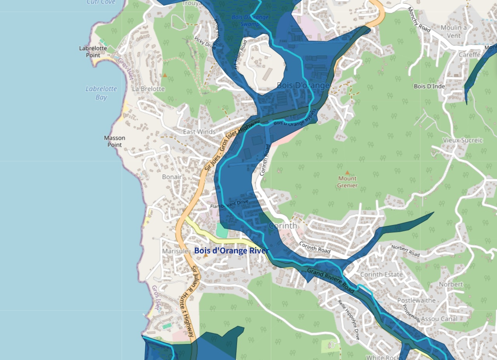

Saint Lucia / GIS
v1.0
Saint Lucia Disaster Risk Portal
Saint Lucia is a steep volcanic island facing threats from hurricanes, earthquakes, and volcanic activity.
Based on geoscientific evidence, it is important to understand the disaster risks of your home, workplace, and school.

Maintained by So Shikama. Built with Leaflet and GitHub Pages.